Revisione dell'assegno di divorzio e di mantenimento: quando è possibile
L'assegno di divorzio e il mantenimento dei figli non sono importi immutabili. Possono essere rivisti, in aumento o in diminuzione, ma solo davanti a mutamenti oggettivi delle cond…

Testamento annullabile per incapacità di intendere: quando e come
Un testamento redatto da chi non era in grado di intendere e volere può essere annullato, ma la legge chiede prove rigorose. L'art. 591 del codice civile fissa presupposti stringen…

Mezzi di ricerca della prova: quando le prove sono inutilizzabili
Non tutte le prove raccolte durante le indagini possono essere usate contro l'imputato. Il codice di procedura penale distingue tra prove acquisite in violazione di divieti e sempl…

Revisione penale e perizie vocali con IA: i limiti fissati dalla Cassazione
La Corte di Cassazione ha escluso che una perizia fonetica basata su intelligenza artificiale, priva di metodo verificabile, possa fondare la revisione di un processo penale. Il pr…

Rinuncia all'eredità dopo accettazione tacita: perché non produce effetti
Chi compie atti che presuppongono la volontà di accettare l'eredità diventa erede, spesso senza rendersene conto. Da quel momento la rinuncia non ha più valore: l'accettazione è de…

Precedenza all'incrocio e velocità: quando scatta la sanzione
Avere la precedenza a un incrocio non autorizza a passare a qualsiasi velocità. La giurisprudenza è netta: chi transita troppo veloce può essere multato e, in caso di sinistro, ved…

Caduta in RSA senza assistenza: la struttura risponde del danno
Il Tribunale di Tivoli ha riconosciuto il risarcimento agli eredi di una paziente affetta da Alzheimer caduta in una RSA in assenza di adeguata assistenza. La decisione ribadisce c…

Diritto alla riparazione: cosa cambia dal 31 luglio 2026
Dal 31 luglio 2026 gli Stati membri dovranno applicare la direttiva UE sul diritto alla riparazione dei beni difettosi. La norma rafforza la posizione del consumatore, introduce ob…

Assegno unico e figli residenti all'estero: come funziona il coordinamento UE
L'assegno unico e universale può spettare anche per figli che risiedono in un altro Stato UE, ma il diritto si intreccia con le regole europee di coordinamento della sicurezza soci…

Guida in stato di ebbrezza: quando la particolare tenuità del fatto può evitare la condanna
Un tasso alcolemico di poco superiore alla soglia penale non porta sempre alla condanna. In presenza di una guida non pericolosa, il giudice può escludere la punibilità per partico…

Il concetto di domicilio nel diritto penale: cosa comprende davvero
La nozione penale di domicilio è più ampia di quanto si creda: non coincide solo con l'abitazione. Uffici professionali, box auto e aree recintate possono ricevere la stessa tutela…

Denuncia e querela: quando e come l'indagato viene avvisato
Molti si chiedono entro quanto tempo la polizia debba comunicare all'interessato che è stata presentata una denuncia o querela nei suoi confronti. La risposta sorprende: non esiste…

Comunione dei beni tra coniugi: cosa entra e cosa resta personale
La comunione dei beni è il regime patrimoniale che si applica in via automatica ai coniugi che non scelgono diversamente. Sapere quali acquisti diventano comuni e quali restano per…

Casa comprata all'asta con inquilino: quando posso mandarlo via?
Chi acquista un immobile all'asta giudiziaria non sempre ottiene un bene libero. Se esiste un contratto di locazione registrato prima del pignoramento, l'aggiudicatario deve rispet…
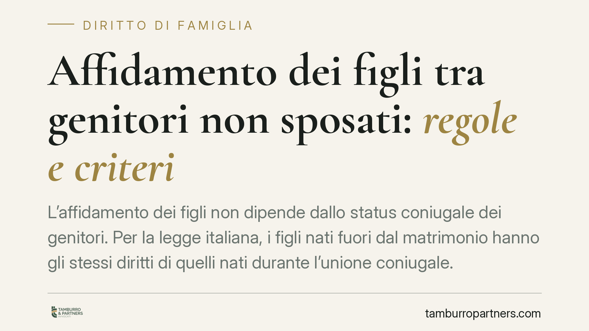
Affidamento dei figli tra genitori non sposati: regole e criteri
L'affidamento dei figli non dipende dallo status coniugale dei genitori. Per la legge italiana, i figli nati fuori dal matrimonio hanno gli stessi diritti di quelli nati durante l'…
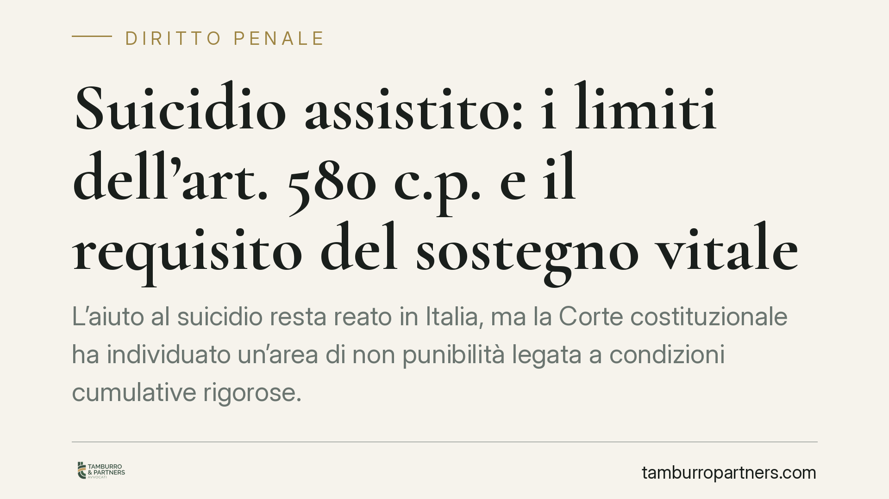
Suicidio assistito: i limiti dell'art. 580 c.p. e il requisito del sostegno vitale
L'aiuto al suicidio resta reato in Italia, ma la Corte costituzionale ha individuato un'area di non punibilità legata a condizioni cumulative rigorose. Al centro del dibattito c'è …
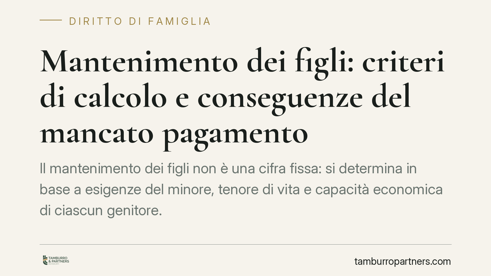
Mantenimento dei figli: criteri di calcolo e conseguenze del mancato pagamento
Il mantenimento dei figli non è una cifra fissa: si determina in base a esigenze del minore, tenore di vita e capacità economica di ciascun genitore. Chi non versa quanto stabilito…
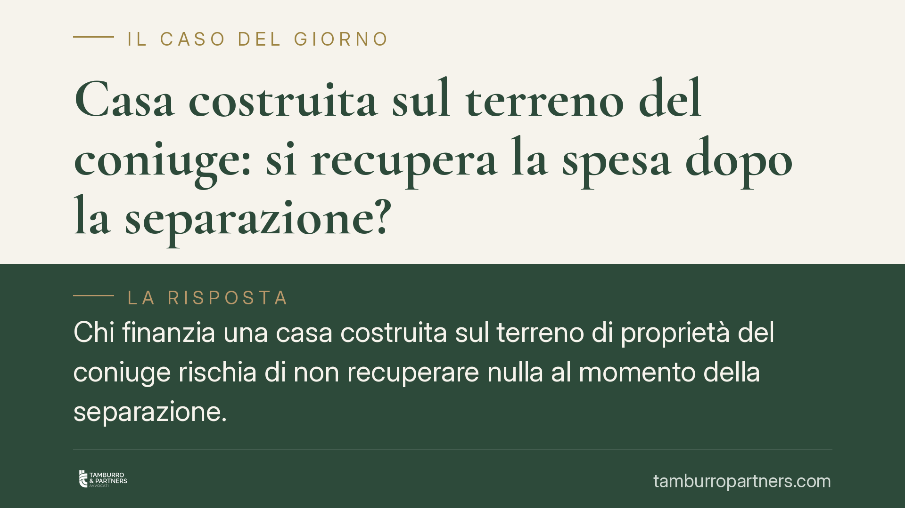
Casa costruita sul terreno del coniuge: si recupera la spesa dopo la separazione?
Chi finanzia una casa costruita sul terreno di proprietà del coniuge rischia di non recuperare nulla al momento della separazione. La Corte d'Appello di Cagliari qualifica quelle s…
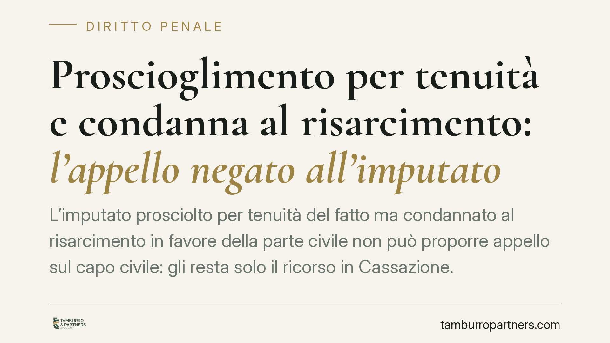
Proscioglimento per tenuità e condanna al risarcimento: l'appello negato all'imputato
L'imputato prosciolto per tenuità del fatto ma condannato al risarcimento in favore della parte civile non può proporre appello sul capo civile: gli resta solo il ricorso in Cassaz…
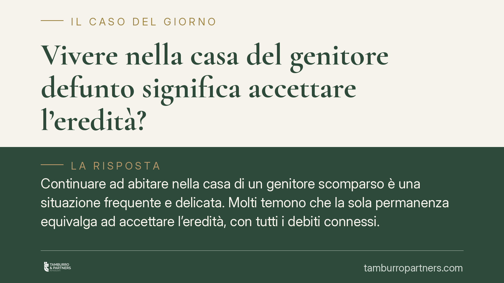
Vivere nella casa del genitore defunto significa accettare l'eredità?
Continuare ad abitare nella casa di un genitore scomparso è una situazione frequente e delicata. Molti temono che la sola permanenza equivalga ad accettare l'eredità, con tutti i d…
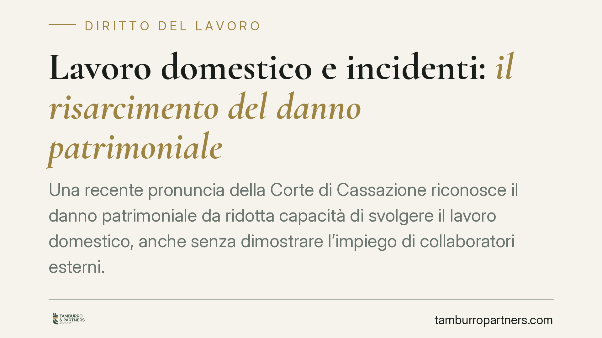
Lavoro domestico e incidenti: il risarcimento del danno patrimoniale
Una recente pronuncia della Corte di Cassazione riconosce il danno patrimoniale da ridotta capacità di svolgere il lavoro domestico, anche senza dimostrare l'impiego di collaborato…
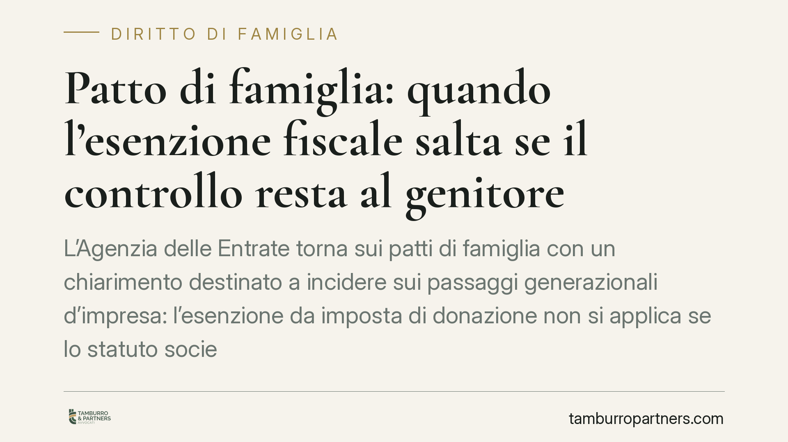
Patto di famiglia: quando l'esenzione fiscale salta se il controllo resta al genitore
L'Agenzia delle Entrate torna sui patti di famiglia con un chiarimento destinato a incidere sui passaggi generazionali d'impresa: l'esenzione da imposta di donazione non si applica…
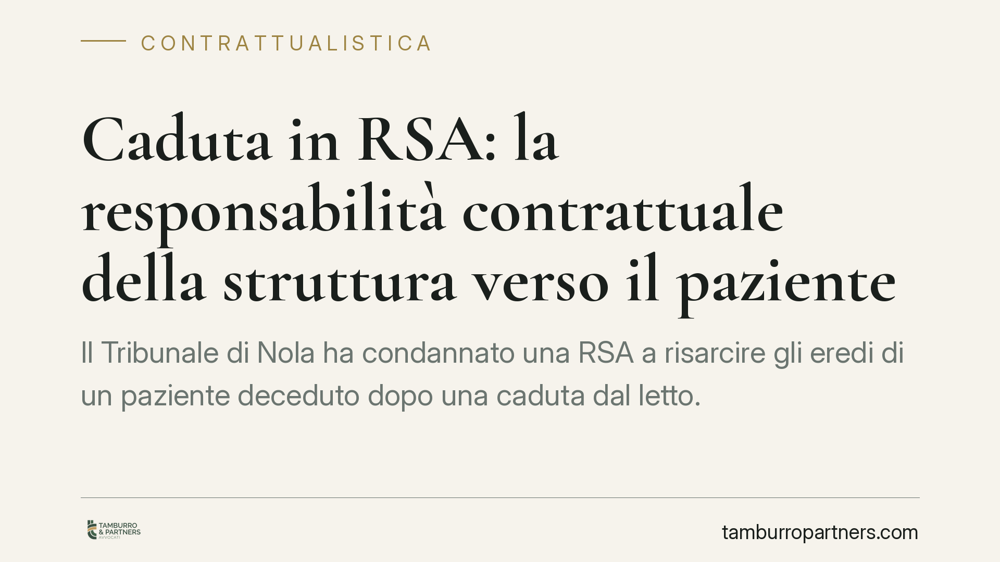
Caduta in RSA: la responsabilità contrattuale della struttura verso il paziente
Il Tribunale di Nola ha condannato una RSA a risarcire gli eredi di un paziente deceduto dopo una caduta dal letto. La decisione ribadisce un principio consolidato: tra struttura e…
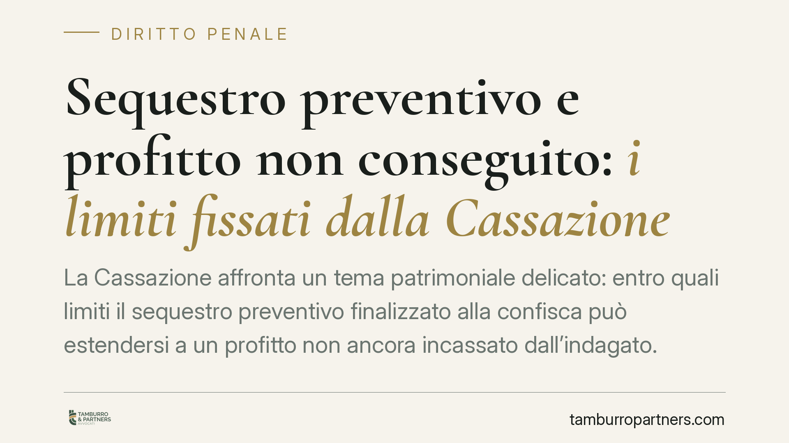
Sequestro preventivo e profitto non conseguito: i limiti fissati dalla Cassazione
La Cassazione affronta un tema patrimoniale delicato: entro quali limiti il sequestro preventivo finalizzato alla confisca può estendersi a un profitto non ancora incassato dall'in…
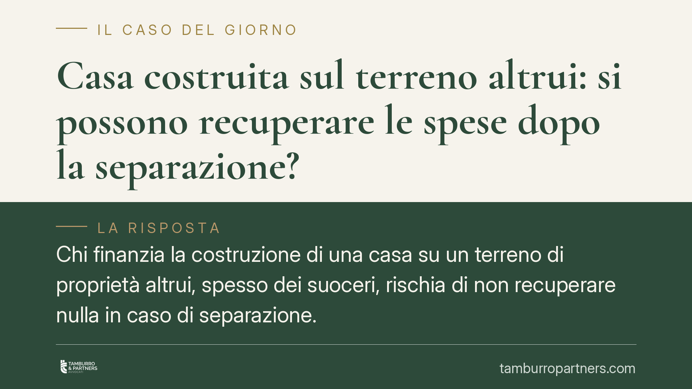
Casa costruita sul terreno altrui: si possono recuperare le spese dopo la separazione?
Chi finanzia la costruzione di una casa su un terreno di proprietà altrui, spesso dei suoceri, rischia di non recuperare nulla in caso di separazione. Lo ha ribadito la Corte d'App…
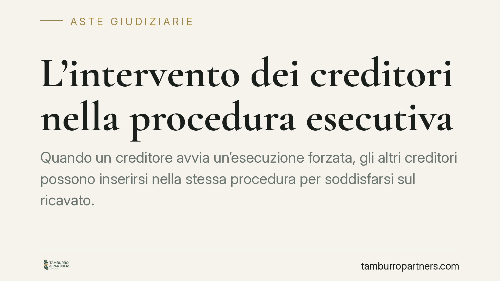
L'intervento dei creditori nella procedura esecutiva
Quando un creditore avvia un'esecuzione forzata, gli altri creditori possono inserirsi nella stessa procedura per soddisfarsi sul ricavato. Ma le condizioni di accesso, i termini e…
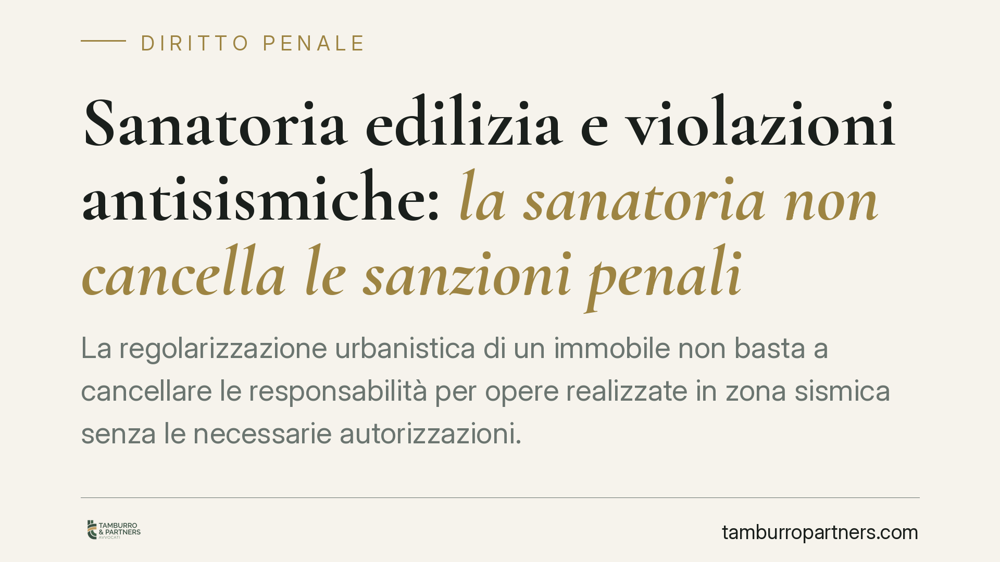
Sanatoria edilizia e violazioni antisismiche: la sanatoria non cancella le sanzioni penali
La regolarizzazione urbanistica di un immobile non basta a cancellare le responsabilità per opere realizzate in zona sismica senza le necessarie autorizzazioni. La giurisprudenza t…
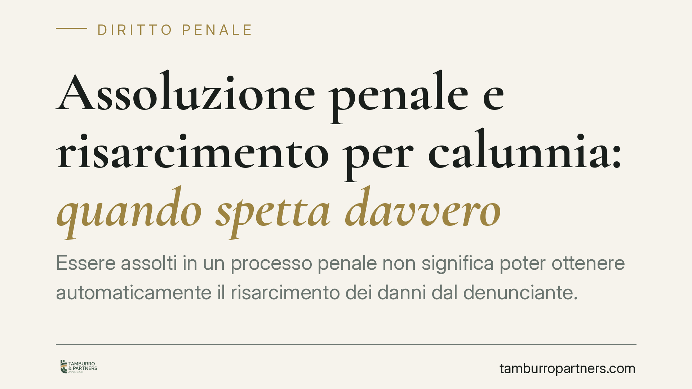
Assoluzione penale e risarcimento per calunnia: quando spetta davvero
Essere assolti in un processo penale non significa poter ottenere automaticamente il risarcimento dei danni dal denunciante. Il Tribunale di Ferrara ribadisce un principio spesso f…
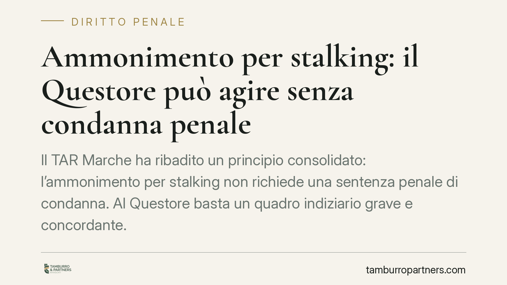
Ammonimento per stalking: il Questore può agire senza condanna penale
Il TAR Marche ha ribadito un principio consolidato: l'ammonimento per stalking non richiede una sentenza penale di condanna. Al Questore basta un quadro indiziario grave e concorda…
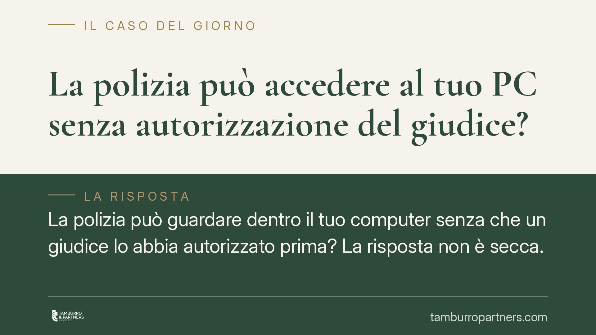
La polizia può accedere al tuo PC senza autorizzazione del giudice?
La polizia può guardare dentro il tuo computer senza che un giudice lo abbia autorizzato prima? La risposta non è secca. In casi di urgenza l'accertamento è possibile, ma con vinco…